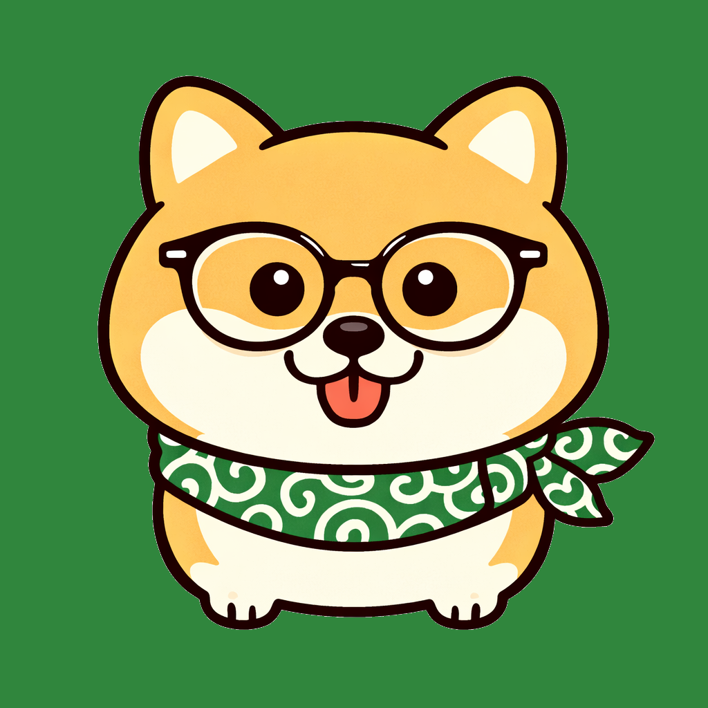
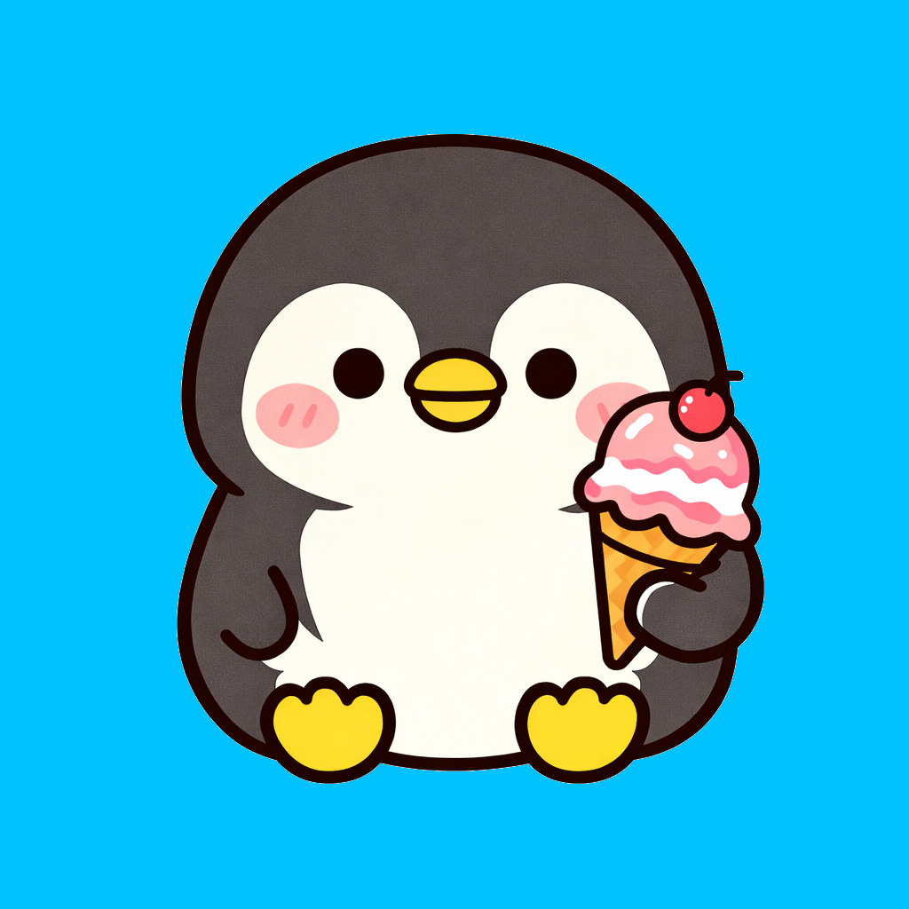
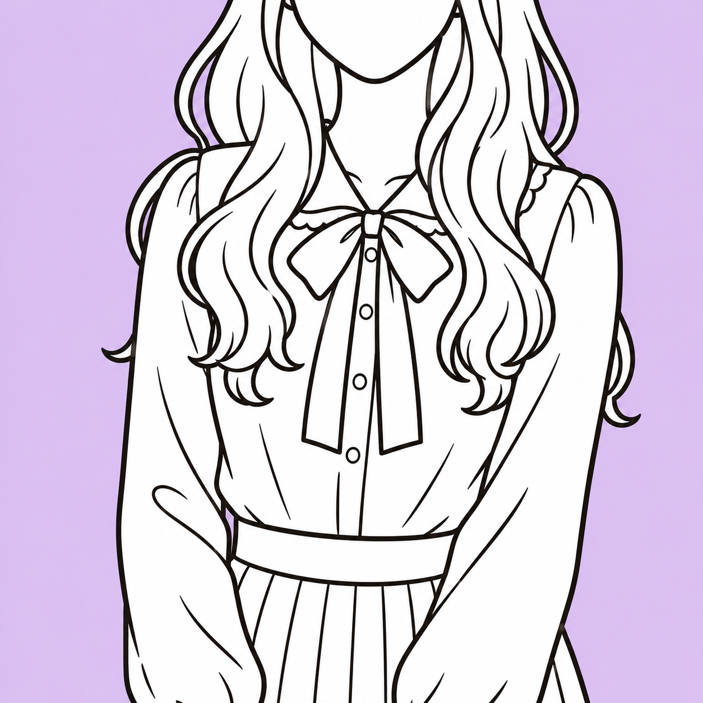
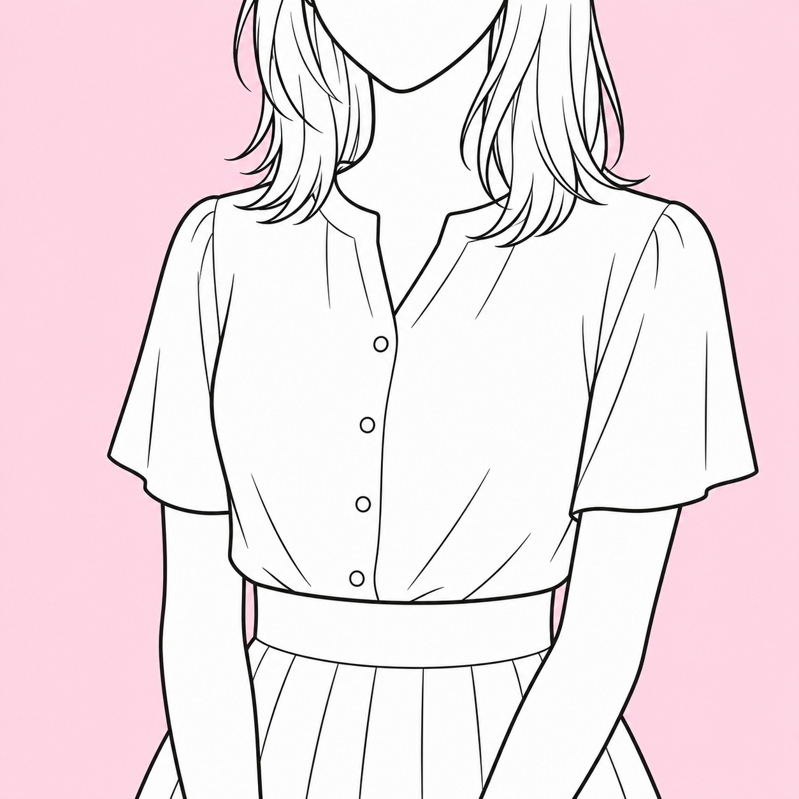
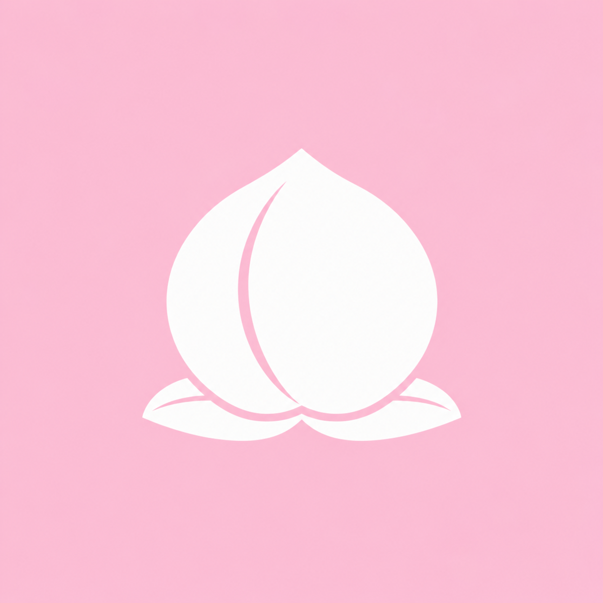

2026.06.15 - 07.31 開催
✨ 2026.08.09 結果発表 ✨
✨ 2026.08.09 結果発表 ✨
🎉 栄えある受賞作品をチェック！
🏆 結果発表ページを見る ➔
たくさんの熱いご応募＆ご投票、誠にありがとうございました！
皆様から寄せられた全54作品とコメントをぜひお楽しみください✨
声だけで
すでに満点
予約完了
すでに満点
予約完了
再会を
喜び熱く
燃え上がる
喜び熱く
燃え上がる

かおる店長より：
情熱的な一句をありがとうございます✨
お二人の「再会」への熱い想いが、まっすぐに伝わってきて胸が熱くなります🥰
そんな素敵な時間をさらに盛り上げられるよう、私たちも心を込めてお迎えします♪
お二人の「再会」への熱い想いが、まっすぐに伝わってきて胸が熱くなります🥰
そんな素敵な時間をさらに盛り上げられるよう、私たちも心を込めてお迎えします♪
残り香に
再逢、約する
ドアの前ひとり
再逢、約する
ドアの前ひとり

スタッフ柴より：
「残り香」という言葉選びが美しく、別れ際の情景が自然と目に浮かぶ一句ですね🍵
静かな余韻の中に、次の再逢への想いが込められていて、とても味わい深く感じました。
また素敵な時間を重ねていただけますように🙇♂️
静かな余韻の中に、次の再逢への想いが込められていて、とても味わい深く感じました。
また素敵な時間を重ねていただけますように🙇♂️
あじさいも
色をわすれる
浴衣のあなた
色をわすれる
浴衣のあなた

スタッフみなみより：
浴衣姿に心奪われる瞬間が伝わってくる、季節感あふれる一句ですね👘
あじさいさえ霞んでしまうほどの素敵なひとときだったことが伝わってきました😊
また心に残るデートになりますように✨
あじさいさえ霞んでしまうほどの素敵なひとときだったことが伝わってきました😊
また心に残るデートになりますように✨
2時間で
心の隙間
埋めに来る
心の隙間
埋めに来る

荒井美保さんより：
求めるのは、心の充実💓
2時間でも 心は満たされる、
そう思っていただけると 嬉しいです🥰
そんな温かさを感じる一句です🍀
2時間でも 心は満たされる、
そう思っていただけると 嬉しいです🥰
そんな温かさを感じる一句です🍀
日記見て
実物求め
足が向く
実物求め
足が向く

尾崎幸子さんより：
毎日コツコツ続けているので
日記から気持ちが動いて、
会いに来てもらえるって嬉しいです🥰
実際に会った時
「思ってたよりいいな」って思ってもらえるように
とびきりの笑顔でお伺いします♡
日記から気持ちが動いて、
会いに来てもらえるって嬉しいです🥰
実際に会った時
「思ってたよりいいな」って思ってもらえるように
とびきりの笑顔でお伺いします♡
写真より
大人の輝き
素顔ゆえ
大人の輝き
素顔ゆえ
荒井美保さんより：
写真は入口、
魅力の本番はその先に...️
会った人だけが知る輝きを
表現した一句、素敵ですね😍
魅力の本番はその先に...️
会った人だけが知る輝きを
表現した一句、素敵ですね😍
いつ逢える？
ほどいた指先
熱残る
ほどいた指先
熱残る
スタッフ柴より：
別れ際の余韻が美しく描かれた、大人ならではの一句ですね。
「いつ逢える？」という一言に、名残惜しさと優しい想いが込められていて、とても味わい深く感じました🌿
また素敵な時間を重ねていただけますように。
「いつ逢える？」という一言に、名残惜しさと優しい想いが込められていて、とても味わい深く感じました🌿
また素敵な時間を重ねていただけますように。
左右から
何か出そうだ
オーガズム
何か出そうだ
オーガズム

新田多香子さんより：
左右から何が出ちゃうんでしょうね🤭
次回もしっかり確認しなくちゃいけませんね！👮♀️
川柳応募ありがとうございます🥰🫶
次回もしっかり確認しなくちゃいけませんね！👮♀️
川柳応募ありがとうございます🥰🫶
美な笑顔
気品に誠実
美の熟女
気品に誠実
美の熟女
荒井美保さんより：
笑顔に惹かれ、気品に心が和み、
誠実さにまた逢いたくなる🌹
そんな大人の魅力が伝わる一句ですね✨️
川柳投稿、ありがとうございます🙏
誠実さにまた逢いたくなる🌹
そんな大人の魅力が伝わる一句ですね✨️
川柳投稿、ありがとうございます🙏
赤いバラ
情熱溢れる
美熟女さん
情熱溢れる
美熟女さん
かおる店長より：
華やかで情熱あふれる一句をありがとうございます✨🌹✨
美熟女へのまっすぐな想いが伝わってきて、思わず笑顔になりました🤗
また素敵な思い出をたくさん重ねてくださいネ♪
美熟女へのまっすぐな想いが伝わってきて、思わず笑顔になりました🤗
また素敵な思い出をたくさん重ねてくださいネ♪
コンビニで
オキニを見かけて
フル勃起
オキニを見かけて
フル勃起
かおる店長より：
思わず「そんな偶然もあるんですね～！」とクスッとしてしまいました🤭✨
オキニマダムを見かけた時の高揚感が、とても楽しく伝わる一句です♪
プライベートで見かけた際は優しくそっと見守ってあげてくださいネ🥰
オキニマダムを見かけた時の高揚感が、とても楽しく伝わる一句です♪
プライベートで見かけた際は優しくそっと見守ってあげてくださいネ🥰
女には
人を惑わす
色気あり
人を惑わす
色気あり
かおる店長より：
艶やかで大人の魅力が詰まった一句をありがとうございます✨🌹✨
思わず「その通り！」とうなずいてしまいました🤭
これからも美熟女ならではの魅力を、たくさん見つけてくださいネ♪
思わず「その通り！」とうなずいてしまいました🤭
これからも美熟女ならではの魅力を、たくさん見つけてくださいネ♪
目を伏せた
うなじの線に
艶香る
うなじの線に
艶香る
スタッフ柴より：
「目を伏せた」と「うなじ」の描写が美しく、情景が自然と目に浮かぶ一句ですね。✨
控えめな仕草の中に、大人の色香を感じさせる表現がとても印象的でした。
これからも心に残る素敵なひとときをお過ごしください🐶
控えめな仕草の中に、大人の色香を感じさせる表現がとても印象的でした。
これからも心に残る素敵なひとときをお過ごしください🐶
癒されて
心満開
帰り道
心満開
帰り道
スタッフみなみより：
「心満開帰り道」というフレーズから、とても満足していただけた様子が伝わってきて、私まで嬉しくなりました🌸
お客様にそのように感じていただけることが、スタッフ一同最高の喜びです😊
また満開の笑顔にお会いできるのを楽しみにしております✨
お客様にそのように感じていただけることが、スタッフ一同最高の喜びです😊
また満開の笑顔にお会いできるのを楽しみにしております✨
無茶ぶりも
笑顔に変える
電話口
笑顔に変える
電話口
スタッフみなみより：
いつも面白い無茶振りをありがとうございます🤭
電話口でのやり取りを一句にしていただけるなんて、とっても嬉しいです🌼
これからも楽しいお電話、お待ちしております📞もちろんご予約も😉(笑)
電話口でのやり取りを一句にしていただけるなんて、とっても嬉しいです🌼
これからも楽しいお電話、お待ちしております📞もちろんご予約も😉(笑)
熟れた魅力
帰るころには
また予約
帰るころには
また予約
かおる店長より：
楽しいお時間が伝わってくる、心弾む一句ですね🌹✨
「また予約」のひ言に、マダムとのひとときが素敵な思い出になったことを感じて、とても嬉しくなりました🥰
また心ときめく素敵なひとときをお過ごしくださいネ♪
「また予約」のひ言に、マダムとのひとときが素敵な思い出になったことを感じて、とても嬉しくなりました🥰
また心ときめく素敵なひとときをお過ごしくださいネ♪
お別れの
キスは明日の
エネルギー
キスは明日の
エネルギー
新田多香子さんより：
ちゃんとエネルギー満タンになりましたか？🤭💗
多香子はいつでも準備万端でお待ちしています☺️🫶
素敵な川柳ありがとうございます💓
多香子はいつでも準備万端でお待ちしています☺️🫶
素敵な川柳ありがとうございます💓
気がつけば
また会いたくなる
不思議です
また会いたくなる
不思議です
スタッフ柴より：
「不思議です」という結びに、余韻が心地よく残る一句ですね🍵
気づけば惹かれている、そんな自然な想いが、とても美しく表現されていました。
また素敵な時間を重ねていただけますように。
気づけば惹かれている、そんな自然な想いが、とても美しく表現されていました。
また素敵な時間を重ねていただけますように。
その笑顔
反則級の
色気です
反則級の
色気です
スタッフみなみより：
笑顔の中にふと覗く色気は、まさにマダムならではの魅力ね💄
「反則級」という表現に分かる～と思わず頷いてしまいました🤭
また心ときめく素敵なお時間をお過ごしください🫶
「反則級」という表現に分かる～と思わず頷いてしまいました🤭
また心ときめく素敵なお時間をお過ごしください🫶
お気に入り
逢える嬉しさ
笑みこぼれ
逢える嬉しさ
笑みこぼれ
かおる店長より：
「笑みこぼれ」の一言だけで、嬉しさが伝わってくるのが素敵です😊✨
そんなワクワクしたお気持ちが伝わってくる、思わず笑顔になる一句でした🌹
次のご予約も楽しみですネ♪
そんなワクワクしたお気持ちが伝わってくる、思わず笑顔になる一句でした🌹
次のご予約も楽しみですネ♪
熟女沼
何十回でも
過去最高
何十回でも
過去最高
荒井美保さんより：
「今回が一番楽しかった！」と思うたびに、また次もその最高を更新してくれる気がしてしまうのが熟女沼🎀✊
推しは尊い👼推ししか勝たん💖です🥰
推しは尊い👼推ししか勝たん💖です🥰
とびきりの
あなたの笑顔
雨あがる
あなたの笑顔
雨あがる
かおる店長より：
「雨あがる」の締めくくりが、とっても素敵ですネ✨🌈
とびきりの笑顔に、心まで晴れていく情景が目に浮かんで、私まで温かい気持ちになりました🥰
また笑顔あふれる素敵なお時間になりますように♪
とびきりの笑顔に、心まで晴れていく情景が目に浮かんで、私まで温かい気持ちになりました🥰
また笑顔あふれる素敵なお時間になりますように♪
おおきいな
おっぱいちゅー
まんぞくだ
おっぱいちゅー
まんぞくだ
スタッフみなみより：
一般的な川柳では見られないエロ句、大歓迎です👏(笑)
「まんぞくだ」をひらがなで表現されているところが、なんとも可愛らしくて思わず笑ってしまいました🍒
ストレートな言葉の中にも、楽しかったお気持ちがしっかり伝わってきます😊
またクスッと笑える作品を楽しみにしています♪
「まんぞくだ」をひらがなで表現されているところが、なんとも可愛らしくて思わず笑ってしまいました🍒
ストレートな言葉の中にも、楽しかったお気持ちがしっかり伝わってきます😊
またクスッと笑える作品を楽しみにしています♪
乱れ髪
鎖骨へそっと
唇添え
鎖骨へそっと
唇添え
スタッフ柴より：
「乱れ髪」が生み出す余韻と、「鎖骨へそっと」という表現がとても印象的でした🍵
直接語りすぎないからこそ、大人の艶やかさが際立つ味わい深い一句ですね。
また素敵な作品を拝見できる日を楽しみにしております😌
直接語りすぎないからこそ、大人の艶やかさが際立つ味わい深い一句ですね。
また素敵な作品を拝見できる日を楽しみにしております😌
7月の
暑さわすれる
四十路かな
暑さわすれる
四十路かな
かおる店長より：
暑さを忘れてしまうくらい、マダムとのひとときに夢中になっていただけたんですね🥰✨
そんな素敵なお時間をお過ごしいただけたこと、とても嬉しく思います！
この夏も、心に残る思い出をマダムと一緒にたくさん作ってくださいネ♪
そんな素敵なお時間をお過ごしいただけたこと、とても嬉しく思います！
この夏も、心に残る思い出をマダムと一緒にたくさん作ってくださいネ♪
干しぶどう
乳操りすぎて
サクランボ
乳操りすぎて
サクランボ
かおる店長より：
なかなか大胆な表現に、思わず笑ってしまいました🤭✨
発想の面白さと勢いが、この一句の魅力ですネ🍒
また楽しい作品をお待ちしております♪
発想の面白さと勢いが、この一句の魅力ですネ🍒
また楽しい作品をお待ちしております♪
白き肌
ふと甘噛み
息こぼる
ふと甘噛み
息こぼる
スタッフ柴より：
多くを語らずとも情景が浮かぶ、表現力豊かな一句ですね。✨
「甘噛み」という言葉選びが絶妙で、大人の距離感まで伝わってくるようでした。
作品の余韻を楽しませていただきました🌿
「甘噛み」という言葉選びが絶妙で、大人の距離感まで伝わってくるようでした。
作品の余韻を楽しませていただきました🌿
今日もまた
濃厚プレイに
即撃沈！
濃厚プレイに
即撃沈！

堀田瞳さんより：
いつも濃厚な時間をありがとう〜🥰
Tさんの素直な素直な気持ちが伝わるgoodな川柳だと思うよ〜
ご褒美あげる〜😚💕
Tさんの素直な素直な気持ちが伝わるgoodな川柳だと思うよ〜
ご褒美あげる〜😚💕
また来たね
その一言で
また予約
その一言で
また予約
スタッフみなみより：
「また来たね」の一言には、不思議な魔法がありますね🤭✨
何気ない言葉だからこそ嬉しくて、また逢いたくなるお気持ちに共感してしまいました♪
また逢いに行って、「また来たね」の魔法をかけてもらってくださいね🤗🪄
何気ない言葉だからこそ嬉しくて、また逢いたくなるお気持ちに共感してしまいました♪
また逢いに行って、「また来たね」の魔法をかけてもらってくださいね🤗🪄
まったりと
すごすベットで
いやされる
すごすベットで
いやされる
かおる店長より：
「まったり」と過ごす時間も、マダムとの魅力のひとつですネ🤭🌹
心からリラックスできたご様子が伝わってきて、私まで嬉しくなりました🥰
また癒しのひとときを見つけにいらしてくださいネ♪
心からリラックスできたご様子が伝わってきて、私まで嬉しくなりました🥰
また癒しのひとときを見つけにいらしてくださいネ♪
夏の海
白ワンピ透け
風纏う
白ワンピ透け
風纏う
スタッフみなみより：
デートコースをご利用いただいた時の思い出を一句にしてくださり、ありがとうございます👗🐚
「風纏う」という表現が印象的で、夏の空気まで感じられるようでした✨
また素敵な夏の思い出を、たくさん作ってくださいね🌻
「風纏う」という表現が印象的で、夏の空気まで感じられるようでした✨
また素敵な夏の思い出を、たくさん作ってくださいね🌻
梅雨明けや
ベッドの上は
大洪水
ベッドの上は
大洪水
スタッフ柴より：
季節感と遊び心を見事に掛け合わせた、思わず唸る一句ですね🍵
「梅雨明け」と「大洪水」の対比が秀逸で、ユーモアたっぷりに楽しませていただきました😊
また粋な発想の一句を楽しみにしております。
「梅雨明け」と「大洪水」の対比が秀逸で、ユーモアたっぷりに楽しませていただきました😊
また粋な発想の一句を楽しみにしております。
人気嬢
オレよりきっと
稼いでる
オレよりきっと
稼いでる

天海ありささんより：
これまでメッセージで沢山の俳句を詠み合いましたが、素晴らしい新作出してきて笑いを一本とられました笑
猛暑日に
あなたをもとめて
伊予路いく
あなたをもとめて
伊予路いく
スタッフ柴より：
「伊予路」という言葉選びに、お店への想いまで感じられる一句ですね！
猛暑の中でも逢いに向かうお気持ちが、軽やかなリズムで伝わってきました。
言葉選びのセンスが光る素敵な作品でした😌
猛暑の中でも逢いに向かうお気持ちが、軽やかなリズムで伝わってきました。
言葉選びのセンスが光る素敵な作品でした😌
熟女店
栄一だけが
皆勤賞
栄一だけが
皆勤賞
かおる店長より：
とっても面白い一句ですね✨
栄一さんが大活躍してくださる分、私たちも「幸せ」と「癒やし」をたっぷりお返ししますネ🥰
この夏も、暑さを忘れるような素敵なお時間をお過ごしくださいネ♪
栄一さんが大活躍してくださる分、私たちも「幸せ」と「癒やし」をたっぷりお返ししますネ🥰
この夏も、暑さを忘れるような素敵なお時間をお過ごしくださいネ♪
濃密な
プレイはあなたと
だけのもの
プレイはあなたと
だけのもの
スタッフみなみより：
マダム冥利に尽きる、とても情熱的で素敵なお言葉をありがとうございます🌹
他のだれでもない「あなたとだけ」の特別な癒やしを、マダムが心を込めてお届けできたことが伝わり、とても嬉しく思います😊
これからも、お二人だけの特別な時間を大切に育んでいただけるよう、心を込めてお迎えいたします📞
他のだれでもない「あなたとだけ」の特別な癒やしを、マダムが心を込めてお届けできたことが伝わり、とても嬉しく思います😊
これからも、お二人だけの特別な時間を大切に育んでいただけるよう、心を込めてお迎えいたします📞
お礼日記
笑顔が浮かび
予約押す
笑顔が浮かび
予約押す
かおる店長より：
「笑顔が浮かび予約押す」なんて嬉しすぎる一句！🤗
キャストが心を込めて書いたお礼日記が真っ直ぐ届いたようで、店長としても本当に幸せです✨
次回も日記以上のとびきりの笑顔でお迎えしますので、楽しみにいらしてくださいネ♪
キャストが心を込めて書いたお礼日記が真っ直ぐ届いたようで、店長としても本当に幸せです✨
次回も日記以上のとびきりの笑顔でお迎えしますので、楽しみにいらしてくださいネ♪
短夜の
夢見心地の
逢瀬かな
夢見心地の
逢瀬かな
新田多香子さんより：
素敵な川柳ありがとうございます😳💕
夢のような時間は本当にあっという間でしたね💗💗
次回の逢瀬まで後ろ髪を引かれながらお待ちしています😌
夢のような時間は本当にあっという間でしたね💗💗
次回の逢瀬まで後ろ髪を引かれながらお待ちしています😌
暑い日に
涼しい部屋で
熱いふたり
涼しい部屋で
熱いふたり
かおる店長より：
涼しいお部屋なのに、お二人は熱々ですネ🤭🌹
外の暑さなんて忘れてしまうほど、夢中になれるひとときだったんでしょう✨
今年の夏も、素敵な思い出をたくさん作ってくださいネ♪
外の暑さなんて忘れてしまうほど、夢中になれるひとときだったんでしょう✨
今年の夏も、素敵な思い出をたくさん作ってくださいネ♪
いいえがお
いっしょいると
ここちいい
いっしょいると
ここちいい
スタッフ柴より：
「一緒にいると心地いい」とても温かく、何より嬉しいお言葉ですね✨
派手な表現ではなくても、その一言に積み重ねた信頼や安心感がしっかりと伝わってきます。
マダムにとって、何より心に残る贈り物になったことでしょう😊
派手な表現ではなくても、その一言に積み重ねた信頼や安心感がしっかりと伝わってきます。
マダムにとって、何より心に残る贈り物になったことでしょう😊
夏の夜に
搾り取られて
上の空
搾り取られて
上の空
かおる店長より：
夏の暑さ以上の熱いひとときだったことが伝わってきて、思わず笑顔になりました🤭
「上の空」の一言に、その夜の満足感がぎゅっと詰まっていますネ♪
次回も心に残る素敵な夏の夜になりますように🌙
「上の空」の一言に、その夜の満足感がぎゅっと詰まっていますネ♪
次回も心に残る素敵な夏の夜になりますように🌙
別れ際
からむ指先
次はいつ？
からむ指先
次はいつ？
スタッフ柴より：
別れ際の一瞬を切り取ったような、美しい一句ですね。✨
「次はいつ？」という一言に、お二人の距離感や想いが凝縮されていて、思わず引き込まれました。
余韻まで楽しませていただきました🌿
「次はいつ？」という一言に、お二人の距離感や想いが凝縮されていて、思わず引き込まれました。
余韻まで楽しませていただきました🌿
逢う前の
胸の高鳴り
帰りまで
胸の高鳴り
帰りまで
尾崎幸子さんより：
逢う前からお帰りの時まで
ドキドキしてくださってとっても嬉しいです♡
実はわたしもいつもドキドキしていますよ🤭
ドキドキしてくださってとっても嬉しいです♡
実はわたしもいつもドキドキしていますよ🤭
逢えぬ日は
日記ばかり
眺めてる
日記ばかり
眺めてる
スタッフみなみより：
「日記ばかり眺めてる」のひ典に、次に逢える日を楽しみにされているお気持ちが伝わってきました🫶
マダムもきっと、そんな想いを知ったら喜ぶと思います😊
また素敵な再会になりますように♪
マダムもきっと、そんな想いを知ったら喜ぶと思います😊
また素敵な再会になりますように♪
また逢おう
火照った顔に
後ろ髪
火照った顔に
後ろ髪
スタッフ柴より：
「後ろ髪」という結びに、名残惜しいお気持ちが美しく表れていますね🌿
また逢いたいという想いが、五・七・五の中に自然と溶け込んだ素敵な一句でした。
余韻まで味わいたくなる作品をありがとうございました😊
また逢いたいという想いが、五・七・五の中に自然と溶け込んだ素敵な一句でした。
余韻まで味わいたくなる作品をありがとうございました😊
身体より
心を癒す
五十路姫
心を癒す
五十路姫
かおる店長より：
「心を癒す」…このお言葉は、マダムにとって何より嬉しい褒め言葉です🥰
きっと担当したマダムも、この一句を読んだら照れながら喜んでしまうと思います🤭
また素敵な一句で、マダムを笑顔にしてあげてくださいネ♪
きっと担当したマダムも、この一句を読んだら照れながら喜んでしまうと思います🤭
また素敵な一句で、マダムを笑顔にしてあげてくださいネ♪
会うたびに
推しが更新
止まらない
推しが更新
止まらない
スタッフみなみより：
「推しが更新」、思わず「わかります！」と言いたくなる一句でした🤭
会うたびに新しい魅力を見つけていただけるなんて、マダムにとっても最高の褒め言葉です🤩
これからも推し更新が止まらないくらい、メロメロになっちゃってくださいね🫶💕
会うたびに新しい魅力を見つけていただけるなんて、マダムにとっても最高の褒め言葉です🤩
これからも推し更新が止まらないくらい、メロメロになっちゃってくださいね🫶💕
満たされて
見送り七歩
離れぬ心
見送り七歩
離れぬ心
スタッフ柴より：
「七歩」という歩数が入るだけで、その場の空気まで伝わってくるから不思議ですね😊
別れ際の名残惜しさと、「離れぬ心」という余韻が静かに重なり、大人ならではの情緒を感じました。
読み終えたあとも心に残る、見事な一句でした🍵
別れ際の名残惜しさと、「離れぬ心」という余韻が静かに重なり、大人ならではの情緒を感じました。
読み終えたあとも心に残る、見事な一句でした🍵
スタイルが
とてもいいです
いじしてね
とてもいいです
いじしてね
かおる店長より：
こんなお言葉をいただけたら、マダムも自分磨きにますます力が入りますネ🥰
「いじしてね」のひ言に、これからも応援したいという優しいお気持ちがぎゅっと詰まっていました♪
マダムにとって、何より励みになる素敵な一句をありがとうございました✨
「いじしてね」のひ言に、これからも応援したいという優しいお気持ちがぎゅっと詰まっていました♪
マダムにとって、何より励みになる素敵な一句をありがとうございました✨
熟女店
自分にすると
ギャル店舗
自分にすると
ギャル店舗
かおる店長より：
「熟女店」が「ギャル店舗」になるなんて、発想の勝利ですネ🤭✨
年齢を重ねるほど、マダムがどんどん若々しく見えてしまうという視点が、とてもユーモアたっぷりでした！
何歳になっても、推しギャルを見つけにいらしてくださいネ♪
年齢を重ねるほど、マダムがどんどん若々しく見えてしまうという視点が、とてもユーモアたっぷりでした！
何歳になっても、推しギャルを見つけにいらしてくださいネ♪
ドアを開け
会いたかったと
抱きしめる
会いたかったと
抱きしめる
スタッフみなみより：
「会いたかった」の一言は、マダムにとって何より嬉しいプレゼントですね🎁
ドアを開けた瞬間から伝わる再会の喜びに、お二人の素敵な関係が目に浮かびました😊
こんな言葉をいただけたら、マダムもきっと胸がいっぱいになりますね🫶
ドアを開けた瞬間から伝わる再会の喜びに、お二人の素敵な関係が目に浮かびました😊
こんな言葉をいただけたら、マダムもきっと胸がいっぱいになりますね🫶
推し一人
百回超えても
ただ一人
百回超えても
ただ一人
かおる店長より：
こんなお言葉をいただけたら、マダム冥利に尽きますネ👏
100回という数字以上に、お二人で積み重ねてこられた時間の尊さが伝わってきました🤗
これからも素敵なご縁が、末永く続きますように✨
100回という数字以上に、お二人で積み重ねてこられた時間の尊さが伝わってきました🤗
これからも素敵なご縁が、末永く続きますように✨
舌先で
転がされる夏
ビーチクボーイ
転がされる夏
ビーチクボーイ
かおる店長より：
夏の情熱と遊び心が絶妙に溶け合った一句ですネ♪
……と言いつつ、「ビーチクボーイ」が頭から離れません🤣
インパクト抜群のネーミングセンス、お見事でした👏
……と言いつつ、「ビーチクボーイ」が頭から離れません🤣
インパクト抜群のネーミングセンス、お見事でした👏
「声だけで満点」と感じていただけたことは、スタッフにとって何よりの励みです😊
これからも安心してご利用いただけるお店づくりに努めてまいります♪